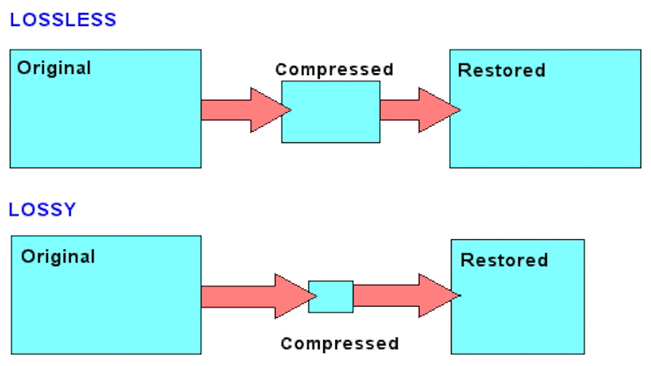

重要特征 / Important Characteristics
✅ 数据完整性 / Data Integrity
不会丢失任何数据 (No data is lost)
原始数据 = 解压缩数据 (Original data = Decompressed data)
原始数据 = 解压缩数据 (Original data = Decompressed data)
✅ 可逆性 / Reversibility
压缩过程完全可逆，支持多次压缩/解压缩
Process is reversible, supports multiple compression cycles
Process is reversible, supports multiple compression cycles
✅ 算法驱动 / Algorithm-Driven
基于数学和统计学原理来压缩数据
Based on mathematical and statistical principles
Based on mathematical and statistical principles
工作原理 / Working Principles
🗘️ 冗余数据识别 / Redundant Data Identification
模式识别 (Pattern Recognition): 找出重复的模式或文本
统计分析 (Statistical Analysis): 分析数据出现频率
统计分析 (Statistical Analysis): 分析数据出现频率
📊 索引化存储 / Indexed Storage
用指针替换重复模式分组到索引中
Repeated patterns are indexed, pointers replace data
Repeated patterns are indexed, pointers replace data
适用场景 / Suitable Scenarios
📄 重要文档 / Critical Documents
电子表格, 数据库文件等。数据丢失会造成严重后果。
💻 程序和代码 / Programs and Code
可执行文件, 源代码等。任何数据更改都会导致错误。
无损压缩定义 / Definition
当文件解压缩时，原始文件中的所有数据位都可以被完全重建。
All data bits from the original file are reconstructed when decompressed.
本地图片 / Local Image: images/lossless_lossy_compression_comparison_diagram.jpg

常用算法 / Common Algorithms
-
Run-Length Encoding (RLE)游程长度编码, 适用于重复数据
-
Huffman Coding基于频率的编码方法
-
LZ77/LZ78字典压缩算法
优势 / Advantages
- 数据安全, 无损失
- 适用于重要文件
- 可多次压缩
限制 / Limitations
- 压缩率相对较低
- 对某些数据效果有限